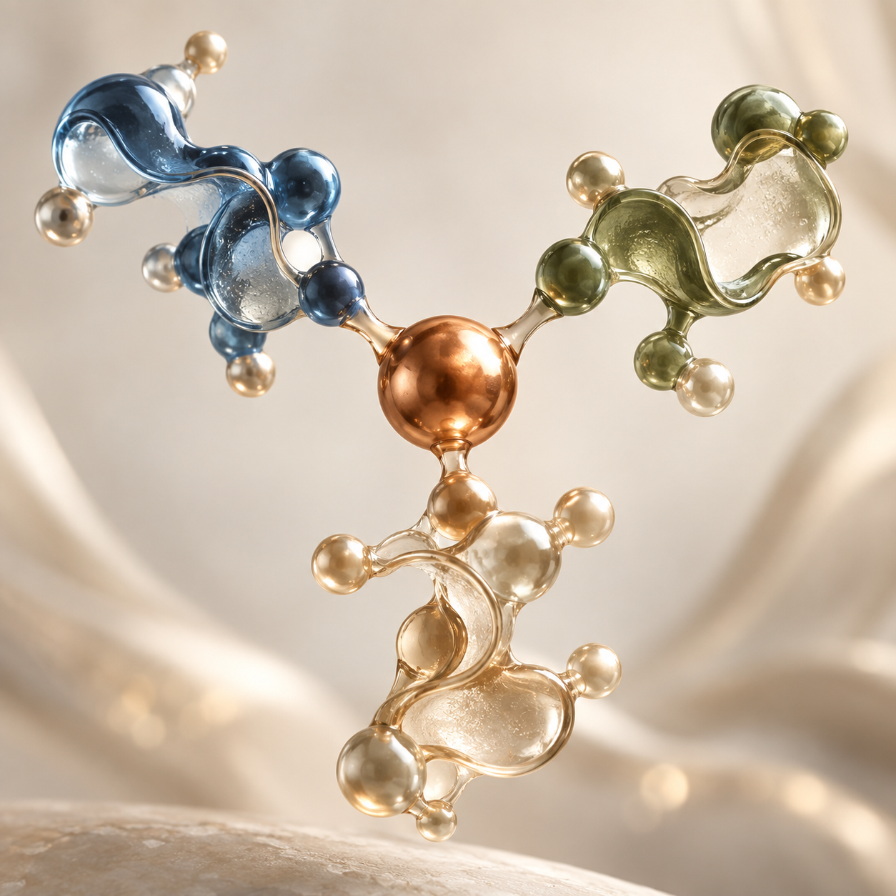
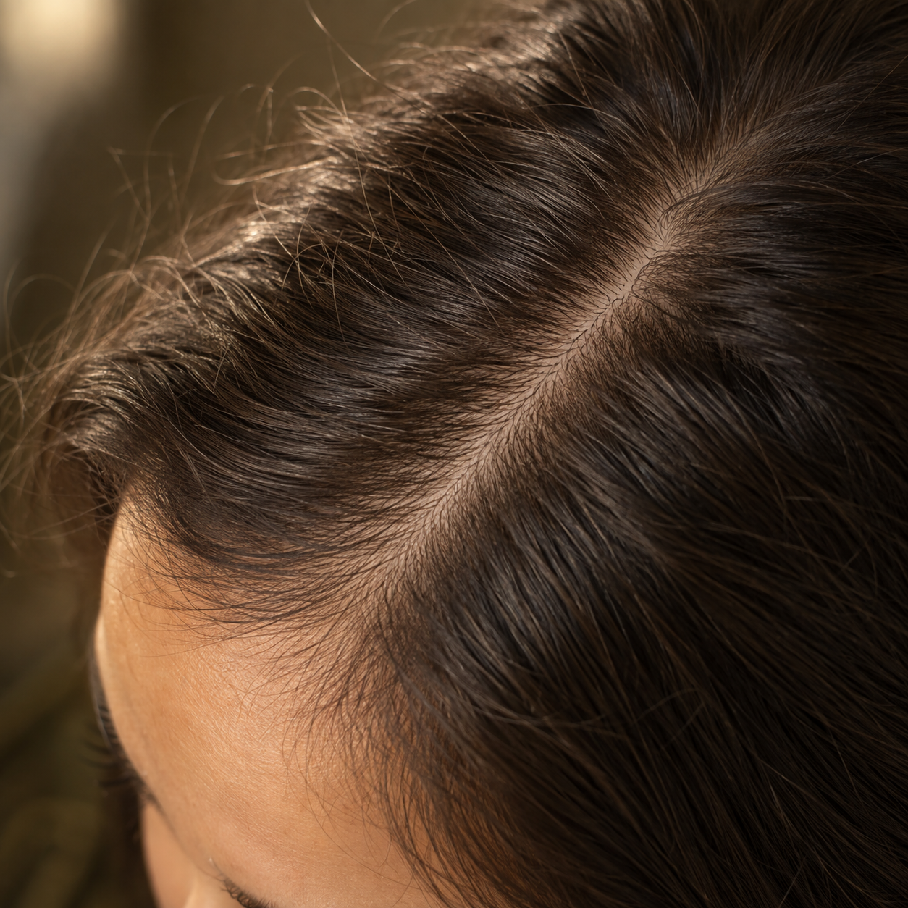
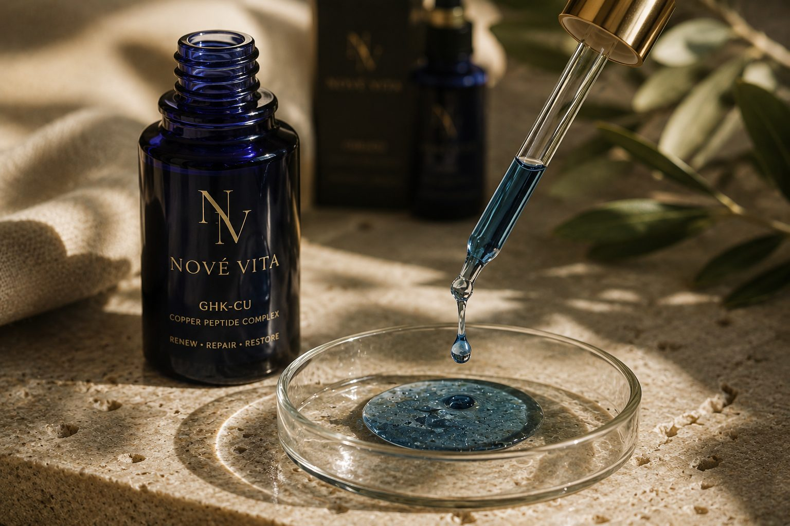
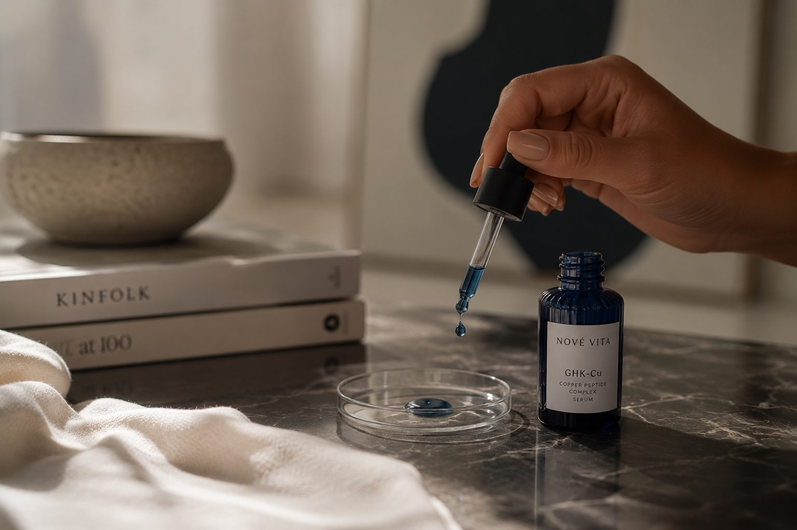

Huid, haar en herstel, van onderzoek tot de spuit
GHK-Cu zit van nature in je bloedplasma. Rond je twintigste ongeveer 200 ng/ml, rond je zestigste nog zo'n 80. Precies in de jaren waarin huid dunner wordt en herstel trager gaat.

GHK is een tripeptide: glycine, histidine, lysine. Het bindt koper met hoge affiniteit, en dat complex heet GHK-Cu. Loren Pickart isoleerde het in 1973 uit menselijk bloedplasma.
De GHK-volgorde komt voor in collageen zelf. Het idee is dat het vrijkomt bij weefselschade en dan werkt als een reparatiesignaal: het trekt immuuncellen aan, remt ontsteking, vangt vrije radicalen weg en zet fibroblasten aan tot nieuwe collageenaanmaak. Recenter onderzoek beschrijft ook effecten op de expressie van een groot aantal genen.
Het koper is geen bijzaak. De werking hangt aan het koperion in het complex, niet aan het peptide alleen.
Voor de huid is dit het best onderbouwde terrein. GHK-Cu stimuleert naast collageen ook elastine, proteoglycanen en glycosaminoglycanen. Het breekt beschadigd collageen af en zet gezonde opbouw in gang, wat het interessant maakt bij littekens en zonschade.
Geïsoleerd uit menselijk plasma-albumine door Loren Pickart. Vanaf de late jaren tachtig kwam het in beeld als wondhelend middel.
De Leyden-studie naar fotoveroudering is een van de bekendste humane studies, en die was topisch. De sterkste bewijskracht ligt bij smeren, niet bij spuiten.
Gemiddelde toename in collageendichtheid na drie maanden in een kleine topische gelstudie uit 2023 onder 21 vrouwen. Klein, maar in lijn met eerder werk.
Onderzoekers die wondgenezing bestudeerden zagen iets onverwachts: haarfollikels werden groter en bleven langer in hun actieve groeifase. Dat maakte GHK-Cu interessant voor haargroei, en het is inmiddels een vaste ingrediënt in scalp-serums.
Wat je realistisch mag verwachten: bestaande follikels die beter presteren, niet nieuwe haren waar er geen zijn. Sommige gebruikers melden fijner gezichtshaar dat iets zichtbaarder wordt. Van donshaar maakt het zelden dik terminaal haar.
Bij haarverlies na GLP-1 gebruik is het verstandig eerst naar de onderliggende oorzaak te kijken. Daarover schreven we apart in het Journal.

In dierstudies bleek iets opvallends: GHK-Cu dat op één plek werd geïnjecteerd, bijvoorbeeld in de dijspier, verbeterde ook de genezing van wonden elders in het lichaam. Een systemisch effect dus, niet alleen lokaal.
Daarnaast remt het ontsteking, werkt het antioxidatief en beschermt het huidcellen tegen UV-schade. Het bevordert ook de vorming van nieuwe bloedvaten, wat bij herstellend weefsel telt.
Hier ligt het meeste humane bewijs. Serums en crèmes bevatten doorgaans lage concentraties. Het nadeel: GHK-Cu dringt niet vanzelf diep door, dus formulering bepaalt veel.
Kies dit voor: rimpels, textuur, littekens, hoofdhuid. Zichtbaar effect vraagt maanden, geen weken.
Doses die je in protocollen tegenkomt liggen rond 1 tot 2 mg per keer, in kuren van enkele weken met een pauze erna. Het bewijs hiervoor is grotendeels preklinisch en uit de gebruikersgemeenschap; er is geen gerandomiseerde humane studie die een optimale injecteerbare dosis vaststelt.
Kies dit alleen in overleg met een arts, en met een betrouwbare bron.
Kies je vial en hoeveel bacteriostatisch water je toevoegt. Je ziet meteen tot hoeveel eenheden je optrekt op je spuit, hoeveel doses er in de vial zitten en hoe lang die meegaat.
Het korte antwoord: bij normaal gebruik van GHK-Cu is dat geen must, maar het is ook geen onzin waar het vandaan komt.
Koper en zink zijn biologische tegenspelers. Ze delen dezelfde transportroutes in de darm, dus structureel veel van het één kan het ander verdringen. Dat werkt trouwens beide kanten op: hoge doses zink, zoals mensen tijdens verkoudheid slikken, drukken juist koper omlaag.
De hoeveelheid koper in een GHK-Cu kuur is klein. De zorg om koperstapeling gaat vooral over chronisch hooggedoseerd gebruik, en de claim dat koperpeptiden versnelde veroudering geven is anekdotisch, niet onderbouwd door grote studies. Wie langdurig kuurt of al zinksuppletie gebruikt, kan de balans laten meten in plaats van blind bij te slikken.
Neem je toch zink, houd het dan gescheiden in de tijd van je koperinname, en overleg met je arts. Wilson en andere aandoeningen van de koperstofwisseling zijn een reden om GHK-Cu helemaal niet te gebruiken.
De FDA beoordeelt GHK-Cu voor niet-injecteerbare toepassingen binnen het compounding-kader. Beoordeling is geen goedkeuring.
Collageenopbouw is een kwestie van maanden. Wie na twee weken niets ziet, kijkt te vroeg.
Veel onderzoek is in-vitro, in dieren of klein van opzet. Voor injecteerbaar gebruik ontbreken gerandomiseerde humane studies.

De FDA evalueert GHK-Cu voor niet-injecteerbare toepassingen binnen het Amerikaanse compounding-kader.

Wat koperpeptiden doen voor de huid, en waar de aandacht vandaan komt.
Nieuw onderzoek vindt een verband tussen GLP-1 medicatie en haarverlies.
Er is geen verplichte hoeveelheid. Meer water betekent een lagere concentratie en dus meer eenheden op de spuit, wat prettiger afleest. Minder water betekent een kleiner injectievolume. GHK-Cu heeft soms wat meer water nodig om goed op te lossen. Reken je combinatie na in de calculator.
Het koperion in het complex geeft die blauwgroene kleur. Een heldere, licht getinte oplossing wijst erop dat het oplossen goed is gegaan.
Ongeveer 28 dagen in de koelkast, mits opgelost met bacteriostatisch water en beschermd tegen licht. Gaat je vial op papier langer mee dan dat, dan is een kleinere vial vaak logischer.
Ja, dezelfde fles water kan voor verschillende peptides. Let er wel op dat je GHK-Cu niet met zoutoplossing mengt, terwijl sommige andere peptides dat wel verdragen.
Onder ongeveer vier eenheden wordt aflezen lastig. Los dan op in meer water, of gebruik een spuit van 0,3 ml met halve streepjes. Voor subcutane injectie worden naalden van 29 tot 31 gauge gebruikt.
Voor de huid zelf is topisch het best onderbouwd, met humane studies achter zich. Injecteerbaar gebruik richt zich op systemische effecten en steunt vooral op preklinisch onderzoek en ervaringen uit de gebruikersgemeenschap.
Bij een normale kuur is dat geen must. Koper en zink concurreren om dezelfde transportroutes, dus bij langdurig gebruik is het zinvol om je balans te laten meten in plaats van blind bij te slikken. Neem je zink, houd dat dan gescheiden in de tijd en overleg met je arts.
Stuur een bericht via WhatsApp. We denken graag met je mee over route, dosering en verwachtingen.
Stuur een WhatsApp